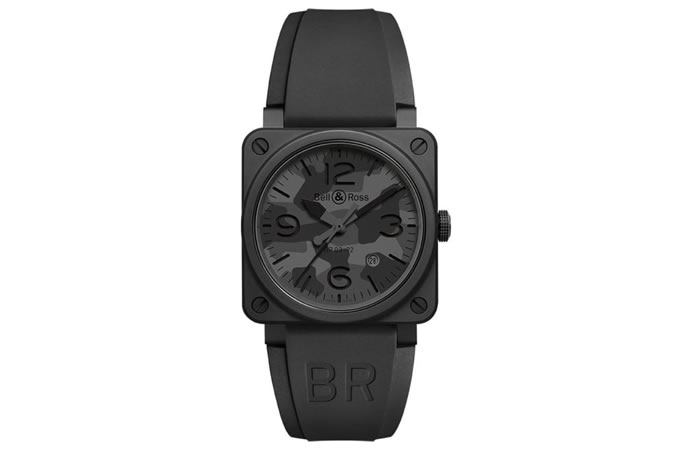
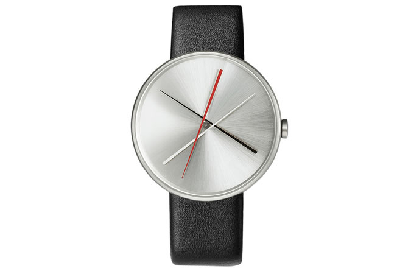
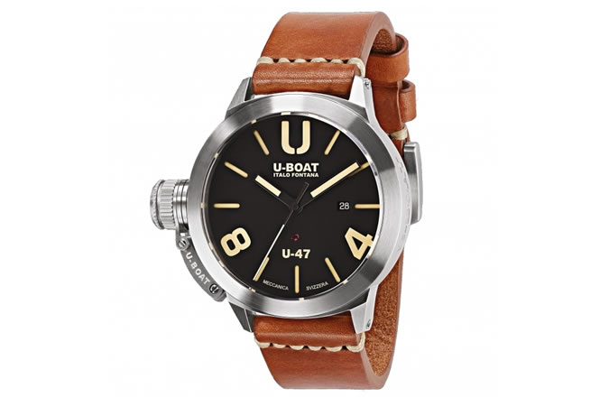
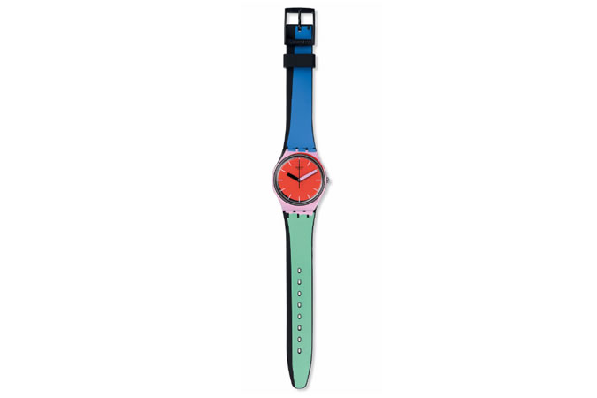
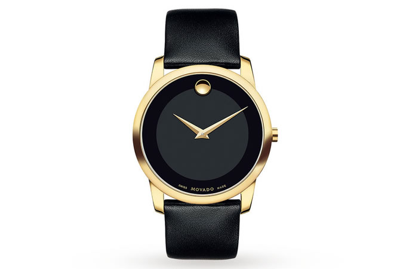

Men's hair style gallary

Short hair style

Medium hair style

Long hair style

Curly hair style
Celebrity hair style
Short hair style
Medium hair style
Long hair style
Curly hair style
Celebrity hair style

In the world of fine watches (or haute horlogerie if you want to sound swish and Swiss), statement pieces are more divisive than any wide leg trouser. Too gauche for the purists and too, well, statement, for the rest, a quick search on a dedicated forum will reveal keyboard wars of near-nuclear proportions.
Though just as the trend for smaller watches has inclined, so too has the taste for grandstander wrist trophies says Erica Redgrave, a buyer at luxury etailer The Watch Gallery. “Mirroring the recent release of Dolce & Gabbana’s first tourbillon line, the appetite for more statement watches has grown thanks to the likes of Hublot and an ever swelling market for novelties – one-of-a-kind pieces that normally err on the side of peacocking.”
If the beauties below are anything to go by, the peacocks are fighting a winning battle. Just remember that not every statement watch has to look like something Diddy would wear.
With a history rooted in aviation, Bell & Ross didn’t look to the skies at this year’s Baselworld, but placed boots on the ground. The Black Camo – a monochrome take on an enduring menswear trend – adds stealth to the statement by co-opting military fatigues into an all-black watch. Statement in the same way the special forces are.
If you believe time to be an abstract construct, opt for an equally cerebral piece from Projects Watches. With a clean, clear dial that can flit between multiple looks, this Pick Up Stix-inspired ticker is more Centre Pompidou than Fisher Price.
It doesn’t get much more statement than a U-Boat. Clocking in at a mighty 47mm in diameter (essentially big enough to rest your pint on, but please don’t do that), the Swiss-made Classico line is designed for big tastes and even bigger wrists.
You don’t need diamonds or rubies to make a statement. Sure, it helps. But if you’re without a Swiss banker’s bonus, Swatch’s À Coté watch packs a head-turning colour pop at a fraction of fine prices – affordable horology can shine just as bright as any Aladdin’s Cave ticker.
Minimalist watches can still be baller. And statements can be made without causing a shriek on your bank statement. Plus, with a luxe black and gold dial and more curves than Ashley Graham, this classic Movado will have any Wolf Of Wall Street whimpering.
